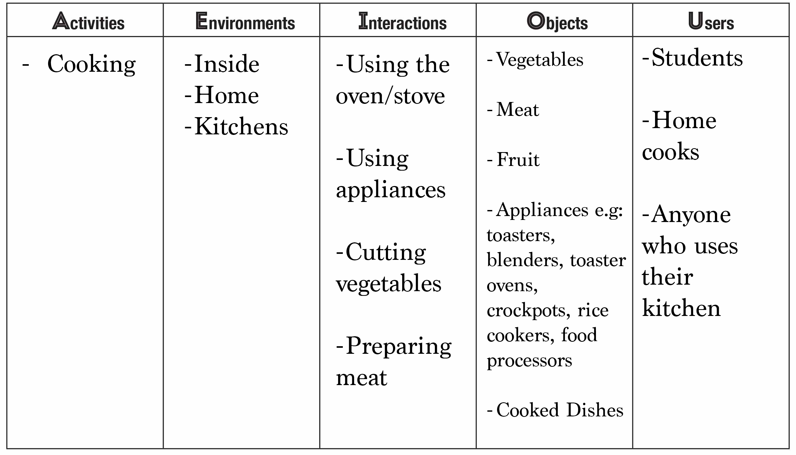

Define: Trouble in the Kitchen

Define Brainstorming:
For the next phase in this assignment I needed a clearer view of the problems facing those with small or cramped kitchens or even if you simply have too much stuff that lives on your counters. To get a full view of the problem I reviewed my ten observations and five insights from last week and used them to brainstorm a list of six separate ways of viewing the problem.
How Might We?
Based on the brainstorming it helped devise several "how might we" statements used to gain a wide perspective on the issues in this area and possible solutions phrased in this way.

Exploring Problems and Solutions
To get the fullest idea of the extent of issues in this area I've made several models to visualize the causes and effects differently. Below are several models that explore this issue by walking through different steps, mapping different aspects, and exploring emotional effects of the issue.
Mind Map
To explore this problem in a new light I created a mind map. This allows you to visually track individual aspects that affect home chefs with small kitchens. Breaking the issue down to objects and effects involved makes the big picture of the issue more accesible.

AEIOU
AEIOU is a way of tracking different elements that affect this issue. This breaks the area down into five categories, activities, environments, interactions, objects, and users. Instead of looking at the issue as a whole, this allows for individual aspects to be looked at to track the problem from all sides.
Customer Journey Map
A customer journey map tracks emotional states through the activity to get a gage of where the problem areas are. From this map I was able to see where the user struggled the most and areas of frustration. The biggest takeaway was how actions that frustrated the user carried through to the next part, and building frustrations led to more issues down the line.
.png)
Conclusion
Through creating these visuals and carrying out these excercises I was able to get a full clear view of the struggles and issues facing home chefs. A small kitchen simply exacerbates problems already faced by home chefs. Having a small kitchen or not having a ton of counter space makes it harder to have items like fruit, utensils like knives or cooking tools, or appliances out where you would like them. Additionally, these items can complicate the act of cooking. Nobody wants to pause cooking on the stove to clear space for bowls or to prepare food, and doing this while cooking can just end up adding to the mess at the end.
With this in mind I revisted the previous "How Might We" statements from earlier with the purpose of narrowing them down to one that best fits the issue.
Because cooking can be such a time consuming endeavor, the seeming best catch-all solution would be to make cooking as accesible as possible for those with limited space or those that don't think they have enough time to work a home-cooked meal into their day. Making cooking seem less daunting can be a difficult task, the best approach I see is to remove as many distractions while cooking as possible and make cleanup as easy as possible.